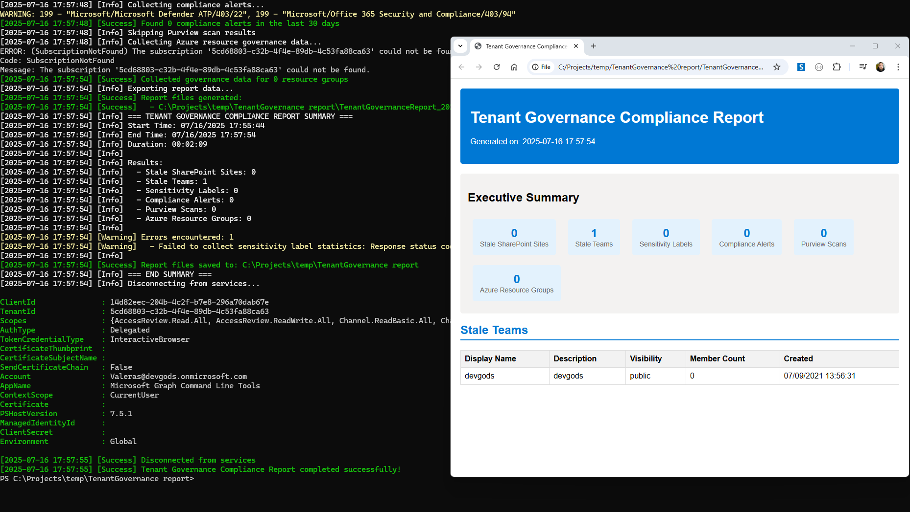

Tenant Governance Compliance Report
Summary
This comprehensive tenant governance compliance report solution helps organizations maintain compliance and security across their Microsoft 365 environment. The script automates the collection of stale Teams and SharePoint sites, sensitivity label statistics, and Microsoft Purview scan results.

Key features:
- Stale Content Detection: Automatically identifies inactive Teams and SharePoint sites based on configurable criteria
- Label Statistics: Generates comprehensive reports on sensitivity label usage across your tenant
- Purview Integration: Collects and aggregates Microsoft Purview scan results for compliance reporting
- Multi-Tool Support: Leverages CLI for Microsoft 365, Microsoft Graph PowerShell, and Azure CLI for comprehensive coverage
- Automated Reporting: Generates detailed reports in multiple formats (CSV, JSON, HTML)
This solution is ideal for compliance officers, IT administrators, and governance teams who need regular insights into their Microsoft 365 environment's health and security posture.
<#
.SYNOPSIS
Tenant Governance Compliance Report - Comprehensive governance and compliance reporting for Microsoft 365 and Azure
.DESCRIPTION
This script generates comprehensive governance and compliance reports by collecting:
- Stale Teams and SharePoint sites
- Sensitivity label statistics
- Microsoft Purview scan results
- Azure resource governance data
- Compliance alerts and security events
.PARAMETER DaysThreshold
Number of days to consider content as stale (default: 90)
.PARAMETER OutputPath
Path where reports will be saved (default: current directory)
.PARAMETER IncludePurview
Boolean to include Purview scan results (default: true)
.PARAMETER ExportFormat
Export format for reports: CSV, JSON, HTML (default: CSV)
.PARAMETER SkipM365
Skip Microsoft 365 data collection (CLI for M365 and Graph PowerShell)
.PARAMETER SkipAzure
Skip Azure data collection (Azure CLI and Purview)
.EXAMPLE
.\TenantGovernanceComplianceReport.ps1
.EXAMPLE
.\TenantGovernanceComplianceReport.ps1 -DaysThreshold 60 -OutputPath "C:\Reports" -ExportFormat "JSON"
.EXAMPLE
.\TenantGovernanceComplianceReport.ps1 -SkipAzure -ExportFormat "HTML"
.NOTES
Author: Valeras Narbutas
GitHub: ValerasNarbutas
Prerequisites:
- CLI for Microsoft 365: npm install -g @pnp/cli-microsoft365
- Microsoft Graph PowerShell: Install-Module Microsoft.Graph -AllowClobber -Force
- Azure CLI: https://docs.microsoft.com/en-us/cli/azure/install-azure-cli
Required Permissions:
- SharePoint: Site.Read.All, Team.ReadBasic.All
- Graph: InformationProtectionPolicy.Read.All, SecurityEvents.Read.All
- Azure: Purview Data Reader, Resource Group Reader
#>
[CmdletBinding()]
param(
[Parameter(Mandatory = $false)]
[int]$DaysThreshold = 90,
[Parameter(Mandatory = $false)]
[string]$OutputPath = (Get-Location).Path,
[Parameter(Mandatory = $false)]
[bool]$IncludePurview = $true,
[Parameter(Mandatory = $false)]
[ValidateSet("CSV", "JSON", "HTML")]
[string]$ExportFormat = "CSV",
[Parameter(Mandatory = $false)]
[switch]$SkipM365,
[Parameter(Mandatory = $false)]
[switch]$SkipAzure
)
# Global variables
$script:ReportData = @{
StaleSites = @()
StaleTeams = @()
SensitivityLabels = @()
ComplianceAlerts = @()
PurviewScans = @()
AzureGovernance = @()
}
$script:ErrorLog = @()
$script:StartTime = Get-Date
# Helper Functions
function Write-LogMessage {
param(
[string]$Message,
[ValidateSet("Info", "Warning", "Error", "Success")]
[string]$Level = "Info"
)
$timestamp = Get-Date -Format "yyyy-MM-dd HH:mm:ss"
$colors = @{
"Info" = "White"
"Warning" = "Yellow"
"Error" = "Red"
"Success" = "Green"
}
Write-Host "[$timestamp] [$Level] $Message" -ForegroundColor $colors[$Level]
if ($Level -eq "Error") {
$script:ErrorLog += @{
Timestamp = $timestamp
Level = $Level
Message = $Message
}
}
}
function Test-Prerequisites {
Write-LogMessage "Checking prerequisites..." -Level "Info"
$prerequisites = @()
# Check CLI for Microsoft 365
if (-not $SkipM365) {
try {
$m365Version = m365 --version 2>$null
if ($m365Version) {
Write-LogMessage "CLI for Microsoft 365 found: $m365Version" -Level "Success"
} else {
$prerequisites += "CLI for Microsoft 365 not found. Install with: npm install -g @pnp/cli-microsoft365"
}
} catch {
$prerequisites += "CLI for Microsoft 365 not found. Install with: npm install -g @pnp/cli-microsoft365"
}
# Check Microsoft Graph PowerShell
if (-not (Get-Module -ListAvailable -Name Microsoft.Graph)) {
$prerequisites += "Microsoft Graph PowerShell not found. Install with: Install-Module Microsoft.Graph -AllowClobber -Force"
} else {
Write-LogMessage "Microsoft Graph PowerShell module found" -Level "Success"
}
}
# Check Azure CLI
if (-not $SkipAzure) {
try {
$azVersion = az --version 2>$null
if ($azVersion) {
Write-LogMessage "Azure CLI found" -Level "Success"
} else {
$prerequisites += "Azure CLI not found. Download from: https://docs.microsoft.com/en-us/cli/azure/install-azure-cli"
}
} catch {
$prerequisites += "Azure CLI not found. Download from: https://docs.microsoft.com/en-us/cli/azure/install-azure-cli"
}
}
if ($prerequisites.Count -gt 0) {
Write-LogMessage "Missing prerequisites:" -Level "Error"
$prerequisites | ForEach-Object { Write-LogMessage " - $_" -Level "Error" }
return $false
}
return $true
}
function Connect-M365Services {
if ($SkipM365) {
Write-LogMessage "Skipping Microsoft 365 connection" -Level "Info"
return $true
}
try {
Write-LogMessage "Connecting to Microsoft 365..." -Level "Info"
# Connect to CLI for Microsoft 365
$m365Status = m365 status --output json 2>$null | ConvertFrom-Json
if (-not $m365Status.connectedAs) {
Write-LogMessage "Connecting to CLI for Microsoft 365..." -Level "Info"
m365 login --authType browser
if ($LASTEXITCODE -ne 0) {
throw "Failed to connect to CLI for Microsoft 365"
}
} else {
Write-LogMessage "Already connected to CLI for Microsoft 365 as: $($m365Status.connectedAs)" -Level "Success"
}
# Connect to Microsoft Graph PowerShell
Write-LogMessage "Connecting to Microsoft Graph PowerShell..." -Level "Info"
$requiredScopes = @(
"InformationProtectionPolicy.Read",
# "InformationProtectionPolicy.Read.All",
"SecurityEvents.Read.All",
"Sites.FullControl.All",
# "TeamMessages.Read.All",
# "TeamMessages.Read",
"ChannelMessage.Read.All",
"Sites.Read.All",
"Team.ReadBasic.All"
)
Connect-MgGraph -Scopes $requiredScopes #-NoWelcome
if (-not (Get-MgContext)) {
throw "Failed to connect to Microsoft Graph PowerShell"
}
Write-LogMessage "Successfully connected to Microsoft 365 services" -Level "Success"
return $true
} catch {
Write-LogMessage "Failed to connect to Microsoft 365 services: $($_.Exception.Message)" -Level "Error"
return $false
}
}
function Connect-AzureServices {
if ($SkipAzure) {
Write-LogMessage "Skipping Azure connection" -Level "Info"
return $true
}
try {
Write-LogMessage "Connecting to Azure..." -Level "Info"
# Check if already logged in
$azAccount = az account show --output json 2>$null | ConvertFrom-Json
if (-not $azAccount) {
Write-LogMessage "Connecting to Azure CLI..." -Level "Info"
az login --output table
if ($LASTEXITCODE -ne 0) {
throw "Failed to connect to Azure CLI"
}
} else {
Write-LogMessage "Already connected to Azure as: $($azAccount.user.name)" -Level "Success"
}
Write-LogMessage "Successfully connected to Azure services" -Level "Success"
return $true
} catch {
Write-LogMessage "Failed to connect to Azure services: $($_.Exception.Message)" -Level "Error"
return $false
}
}
function Get-StaleSites {
Write-LogMessage "Collecting stale SharePoint sites..." -Level "Info"
try {
$sites = m365 spo site list --output json | ConvertFrom-Json
$staleSites = @()
foreach ($site in $sites) {
try {
$siteDetails = m365 spo site get --url $site.Url --output json | ConvertFrom-Json
$lastActivityDate = $null
if ($siteDetails.LastItemModifiedDate) {
$lastActivityDate = $siteDetails.LastItemModifiedDate
} elseif ($siteDetails.LastItemUserModifiedDate) {
$lastActivityDate = $siteDetails.LastItemUserModifiedDate
} elseif ($siteDetails.LastContentModifiedDate) {
$lastActivityDate = $siteDetails.LastContentModifiedDate
}
if ($lastActivityDate) {
$lastActivity = Get-Date $lastActivityDate
$daysSinceActivity = (Get-Date) - $lastActivity
if ($daysSinceActivity.Days -gt $DaysThreshold) {
$staleSites += [PSCustomObject]@{
Title = $site.Title
Url = $site.Url
Template = $site.Template
LastActivity = $siteDetails.LastItemModifiedDate
DaysSinceActivity = $daysSinceActivity.Days
Owner = $siteDetails.Owner
StorageUsed = $siteDetails.StorageUsage
SiteId = $site.SiteId
}
}
}
} catch {
Write-LogMessage "Failed to get details for site: $($site.Url)" -Level "Warning"
}
}
$script:ReportData.StaleSites = $staleSites
Write-LogMessage "Found $($staleSites.Count) stale SharePoint sites" -Level "Success"
} catch {
Write-LogMessage "Failed to collect stale SharePoint sites: $($_.Exception.Message)" -Level "Error"
}
}
function Get-StaleTeams {
Write-LogMessage "Collecting stale Teams..." -Level "Info"
try {
$teams = m365 teams team list --output json | ConvertFrom-Json
$staleTeams = @()
foreach ($team in $teams) {
try {
# Get team details including last activity
$teamDetails = m365 teams team get --id $team.id --output json | ConvertFrom-Json
# Check for recent messages in channels
$channels = m365 teams channel list --teamId $team.id --output json | ConvertFrom-Json
$hasRecentActivity = $false
foreach ($channel in $channels) {
try {
$messages = m365 teams message list --teamId $team.id --channelId $channel.id --output json | ConvertFrom-Json
if ($messages) {
$recentMessages = $messages | Where-Object {
$messageDate = Get-Date $_.createdDateTime
$daysSinceMessage = (Get-Date) - $messageDate
$daysSinceMessage.Days -le $DaysThreshold
}
if ($recentMessages) {
$hasRecentActivity = $true
break
}
}
} catch {
# Continue if we can't access messages
}
}
if (-not $hasRecentActivity) {
$staleTeams += [PSCustomObject]@{
DisplayName = $team.displayName
Description = $team.description
Id = $team.id
Visibility = $team.visibility
WebUrl = $team.webUrl
MemberCount = ($teamDetails.members | Measure-Object).Count
CreatedDateTime = $teamDetails.createdDateTime
Classification = $team.classification
}
}
} catch {
Write-LogMessage "Failed to get details for team: $($team.displayName)" -Level "Warning"
}
}
$script:ReportData.StaleTeams = $staleTeams
Write-LogMessage "Found $($staleTeams.Count) stale Teams" -Level "Success"
} catch {
Write-LogMessage "Failed to collect stale Teams: $($_.Exception.Message)" -Level "Error"
}
}
function Get-SensitivityLabelStats {
Write-LogMessage "Collecting sensitivity label statistics..." -Level "Info"
try {
# Method 1: Using Get-MgInformationProtectionPolicy
try {
$policy = Get-MgInformationProtectionPolicy -UserId (Get-MgContext).Account -ExpandProperty labels
$sensitivityLabels = $policy.Labels
} catch {
# Method 2: Direct REST API call if the above fails
Write-LogMessage "Trying alternative method for sensitivity labels..." -Level "Info"
$uri = "https://graph.microsoft.com/v1.0/informationProtection/policy/labels"
$response = Invoke-MgGraphRequest -Uri $uri -Method GET
$sensitivityLabels = $response.value
}
$labelStats = @()
if ($sensitivityLabels) {
foreach ($label in $sensitivityLabels) {
$labelStats += [PSCustomObject]@{
LabelId = $label.Id
LabelName = $label.Name
Description = $label.Description
IsActive = $label.IsActive
Tooltip = $label.Tooltip
Color = $label.Color
Sensitivity = $label.Sensitivity
Priority = $label.Priority
ParentId = $label.ParentId
# Usage statistics would require additional Graph API calls
# This could be enhanced with actual usage data from audit logs
UsageCount = 0
}
}
} else {
Write-LogMessage "No sensitivity labels found or insufficient permissions" -Level "Warning"
}
$script:ReportData.SensitivityLabels = $labelStats
Write-LogMessage "Collected $($labelStats.Count) sensitivity labels" -Level "Success"
} catch {
Write-LogMessage "Failed to collect sensitivity label statistics: $($_.Exception.Message)" -Level "Error"
Write-LogMessage "This might be due to insufficient permissions or the tenant not having sensitivity labels configured" -Level "Warning"
}
}
function Get-ComplianceAlerts {
Write-LogMessage "Collecting compliance alerts..." -Level "Info"
try {
$alerts = Get-MgSecurityAlert | Where-Object {
$_.CreatedDateTime -gt (Get-Date).AddDays(-30)
}
$complianceAlerts = @()
foreach ($alert in $alerts) {
$complianceAlerts += [PSCustomObject]@{
Id = $alert.Id
Title = $alert.Title
Category = $alert.Category
Severity = $alert.Severity
Status = $alert.Status
CreatedDateTime = $alert.CreatedDateTime
Description = $alert.Description
RecommendedAction = $alert.RecommendedAction
VendorInformation = $alert.VendorInformation.Vendor
ThreatIntelligence = $alert.ThreatIntelligence
}
}
$script:ReportData.ComplianceAlerts = $complianceAlerts
Write-LogMessage "Found $($complianceAlerts.Count) compliance alerts in the last 30 days" -Level "Success"
} catch {
Write-LogMessage "Failed to collect compliance alerts: $($_.Exception.Message)" -Level "Error"
}
}
function Get-PurviewScanResults {
if (-not $IncludePurview) {
Write-LogMessage "Skipping Purview scan results" -Level "Info"
return
}
Write-LogMessage "Collecting Microsoft Purview scan results..." -Level "Info"
try {
$purviewAccounts = az purview account list --output json 2>$null | ConvertFrom-Json
if (-not $purviewAccounts) {
Write-LogMessage "No Purview accounts found" -Level "Warning"
return
}
$purviewResults = @()
foreach ($account in $purviewAccounts) {
try {
Write-LogMessage "Processing Purview account: $($account.name)" -Level "Info"
# Get data sources
$dataSources = az purview data-source list --account-name $account.name --output json 2>$null | ConvertFrom-Json
foreach ($dataSource in $dataSources) {
try {
# Get scans for this data source
$scans = az purview scan list --account-name $account.name --data-source-name $dataSource.name --output json 2>$null | ConvertFrom-Json
foreach ($scan in $scans) {
$purviewResults += [PSCustomObject]@{
AccountName = $account.name
DataSourceName = $dataSource.name
DataSourceType = $dataSource.kind
ScanName = $scan.name
ScanType = $scan.kind
LastRunTime = $scan.lastRunStartTime
LastRunEndTime = $scan.lastRunEndTime
Status = $scan.lastRunStatus
CreatedAt = $scan.createdAt
LastModifiedAt = $scan.lastModifiedAt
}
}
} catch {
Write-LogMessage "Failed to get scans for data source: $($dataSource.name)" -Level "Warning"
}
}
} catch {
Write-LogMessage "Failed to process Purview account: $($account.name)" -Level "Warning"
}
}
$script:ReportData.PurviewScans = $purviewResults
Write-LogMessage "Collected $($purviewResults.Count) Purview scan results" -Level "Success"
} catch {
Write-LogMessage "Failed to collect Purview scan results: $($_.Exception.Message)" -Level "Error"
}
}
function Get-AzureGovernanceData {
Write-LogMessage "Collecting Azure resource governance data..." -Level "Info"
try {
$resourceGroups = az group list --output json | ConvertFrom-Json
$governanceData = @()
foreach ($rg in $resourceGroups) {
try {
# Get policy compliance for resource group
$policyStates = az policy state list --resource-group $rg.name --output json 2>$null | ConvertFrom-Json
$complianceState = if ($policyStates) {
$nonCompliantCount = ($policyStates | Where-Object { $_.complianceState -eq "NonCompliant" }).Count
if ($nonCompliantCount -eq 0) { "Compliant" } else { "Non-Compliant ($nonCompliantCount issues)" }
} else { "No policies assigned" }
$governanceData += [PSCustomObject]@{
ResourceGroupName = $rg.name
Location = $rg.location
Tags = if ($rg.tags) { $rg.tags | ConvertTo-Json -Compress } else { "{}" }
ManagedBy = $rg.managedBy
PolicyCompliance = $complianceState
CreatedTime = $rg.createdTime
ProvisioningState = $rg.properties.provisioningState
ResourceCount = (az resource list --resource-group $rg.name --output json | ConvertFrom-Json).Count
}
} catch {
Write-LogMessage "Failed to get governance data for resource group: $($rg.name)" -Level "Warning"
}
}
$script:ReportData.AzureGovernance = $governanceData
Write-LogMessage "Collected governance data for $($governanceData.Count) resource groups" -Level "Success"
} catch {
Write-LogMessage "Failed to collect Azure governance data: $($_.Exception.Message)" -Level "Error"
}
}
function Export-ReportData {
Write-LogMessage "Exporting report data..." -Level "Info"
$timestamp = Get-Date -Format "yyyyMMdd-HHmmss"
$reportFiles = @()
try {
switch ($ExportFormat) {
"CSV" {
if ($script:ReportData.StaleSites.Count -gt 0) {
$filePath = Join-Path $OutputPath "StaleSharePointSites_$timestamp.csv"
$script:ReportData.StaleSites | Export-Csv -Path $filePath -NoTypeInformation
$reportFiles += $filePath
}
if ($script:ReportData.StaleTeams.Count -gt 0) {
$filePath = Join-Path $OutputPath "StaleTeams_$timestamp.csv"
$script:ReportData.StaleTeams | Export-Csv -Path $filePath -NoTypeInformation
$reportFiles += $filePath
}
if ($script:ReportData.SensitivityLabels.Count -gt 0) {
$filePath = Join-Path $OutputPath "SensitivityLabelStats_$timestamp.csv"
$script:ReportData.SensitivityLabels | Export-Csv -Path $filePath -NoTypeInformation
$reportFiles += $filePath
}
if ($script:ReportData.ComplianceAlerts.Count -gt 0) {
$filePath = Join-Path $OutputPath "ComplianceAlerts_$timestamp.csv"
$script:ReportData.ComplianceAlerts | Export-Csv -Path $filePath -NoTypeInformation
$reportFiles += $filePath
}
if ($script:ReportData.PurviewScans.Count -gt 0) {
$filePath = Join-Path $OutputPath "PurviewScanResults_$timestamp.csv"
$script:ReportData.PurviewScans | Export-Csv -Path $filePath -NoTypeInformation
$reportFiles += $filePath
}
if ($script:ReportData.AzureGovernance.Count -gt 0) {
$filePath = Join-Path $OutputPath "AzureGovernanceData_$timestamp.csv"
$script:ReportData.AzureGovernance | Export-Csv -Path $filePath -NoTypeInformation
$reportFiles += $filePath
}
}
"JSON" {
$filePath = Join-Path $OutputPath "TenantGovernanceReport_$timestamp.json"
$script:ReportData | ConvertTo-Json -Depth 10 | Out-File -FilePath $filePath -Encoding UTF8
$reportFiles += $filePath
}
"HTML" {
$filePath = Join-Path $OutputPath "TenantGovernanceReport_$timestamp.html"
$htmlContent = Generate-HTMLReport
$htmlContent | Out-File -FilePath $filePath -Encoding UTF8
$reportFiles += $filePath
}
}
Write-LogMessage "Report files generated:" -Level "Success"
$reportFiles | ForEach-Object { Write-LogMessage " - $_" -Level "Success" }
} catch {
Write-LogMessage "Failed to export report data: $($_.Exception.Message)" -Level "Error"
}
}
function Generate-HTMLReport {
$html = @"
<!DOCTYPE html>
<html>
<head>
<title>Tenant Governance Compliance Report</title>
<style>
body { font-family: Arial, sans-serif; margin: 20px; }
.header { background-color: #0078d4; color: white; padding: 20px; border-radius: 5px; }
.summary { background-color: #f3f2f1; padding: 15px; margin: 20px 0; border-radius: 5px; }
.section { margin: 20px 0; }
.section h2 { color: #0078d4; border-bottom: 2px solid #0078d4; padding-bottom: 5px; }
table { border-collapse: collapse; width: 100%; margin: 10px 0; }
th, td { border: 1px solid #ddd; padding: 8px; text-align: left; }
th { background-color: #f2f2f2; }
.metric { display: inline-block; margin: 10px; padding: 15px; background-color: #e3f2fd; border-radius: 5px; text-align: center; }
.metric-value { font-size: 24px; font-weight: bold; color: #0078d4; }
.metric-label { font-size: 14px; color: #666; }
.error { color: #d32f2f; }
.success { color: #388e3c; }
.warning { color: #f57c00; }
</style>
</head>
<body>
<div class="header">
<h1>Tenant Governance Compliance Report</h1>
<p>Generated on: $(Get-Date -Format "yyyy-MM-dd HH:mm:ss")</p>
</div>
<div class="summary">
<h2>Executive Summary</h2>
<div class="metric">
<div class="metric-value">$($script:ReportData.StaleSites.Count)</div>
<div class="metric-label">Stale SharePoint Sites</div>
</div>
<div class="metric">
<div class="metric-value">$($script:ReportData.StaleTeams.Count)</div>
<div class="metric-label">Stale Teams</div>
</div>
<div class="metric">
<div class="metric-value">$($script:ReportData.SensitivityLabels.Count)</div>
<div class="metric-label">Sensitivity Labels</div>
</div>
<div class="metric">
<div class="metric-value">$($script:ReportData.ComplianceAlerts.Count)</div>
<div class="metric-label">Compliance Alerts</div>
</div>
<div class="metric">
<div class="metric-value">$($script:ReportData.PurviewScans.Count)</div>
<div class="metric-label">Purview Scans</div>
</div>
<div class="metric">
<div class="metric-value">$($script:ReportData.AzureGovernance.Count)</div>
<div class="metric-label">Azure Resource Groups</div>
</div>
</div>
"@
# Add sections for each data type
if ($script:ReportData.StaleSites.Count -gt 0) {
$html += @"
<div class="section">
<h2>Stale SharePoint Sites</h2>
<table>
<tr><th>Title</th><th>URL</th><th>Days Since Activity</th><th>Owner</th><th>Storage Used</th></tr>
"@
$script:ReportData.StaleSites | ForEach-Object {
$html += "<tr><td>$($_.Title)</td><td>$($_.Url)</td><td>$($_.DaysSinceActivity)</td><td>$($_.Owner)</td><td>$($_.StorageUsed)</td></tr>"
}
$html += "</table></div>"
}
if ($script:ReportData.StaleTeams.Count -gt 0) {
$html += @"
<div class="section">
<h2>Stale Teams</h2>
<table>
<tr><th>Display Name</th><th>Description</th><th>Visibility</th><th>Member Count</th><th>Created</th></tr>
"@
$script:ReportData.StaleTeams | ForEach-Object {
$html += "<tr><td>$($_.DisplayName)</td><td>$($_.Description)</td><td>$($_.Visibility)</td><td>$($_.MemberCount)</td><td>$($_.CreatedDateTime)</td></tr>"
}
$html += "</table></div>"
}
$html += "</body></html>"
return $html
}
function Disconnect-Services {
Write-LogMessage "Disconnecting from services..." -Level "Info"
try {
if (-not $SkipM365) {
# Disconnect from Microsoft Graph
try {
Disconnect-MgGraph -ErrorAction SilentlyContinue
} catch {
# Ignore errors during disconnect
}
# Disconnect from CLI for Microsoft 365
try {
m365 logout
} catch {
# Ignore errors during disconnect
}
}
if (-not $SkipAzure) {
# Note: Azure CLI logout would disconnect all sessions
# Uncomment the next line if you want to logout completely
# az logout
}
Write-LogMessage "Disconnected from services" -Level "Success"
} catch {
Write-LogMessage "Warning during disconnect: $($_.Exception.Message)" -Level "Warning"
}
}
function Show-Summary {
$endTime = Get-Date
$duration = $endTime - $script:StartTime
Write-LogMessage "=== TENANT GOVERNANCE COMPLIANCE REPORT SUMMARY ===" -Level "Info"
Write-LogMessage "Start Time: $($script:StartTime)" -Level "Info"
Write-LogMessage "End Time: $endTime" -Level "Info"
Write-LogMessage "Duration: $($duration.ToString('hh\:mm\:ss'))" -Level "Info"
Write-LogMessage "" -Level "Info"
Write-LogMessage "Results:" -Level "Info"
Write-LogMessage " - Stale SharePoint Sites: $($script:ReportData.StaleSites.Count)" -Level "Info"
Write-LogMessage " - Stale Teams: $($script:ReportData.StaleTeams.Count)" -Level "Info"
Write-LogMessage " - Sensitivity Labels: $($script:ReportData.SensitivityLabels.Count)" -Level "Info"
Write-LogMessage " - Compliance Alerts: $($script:ReportData.ComplianceAlerts.Count)" -Level "Info"
Write-LogMessage " - Purview Scans: $($script:ReportData.PurviewScans.Count)" -Level "Info"
Write-LogMessage " - Azure Resource Groups: $($script:ReportData.AzureGovernance.Count)" -Level "Info"
if ($script:ErrorLog.Count -gt 0) {
Write-LogMessage "" -Level "Info"
Write-LogMessage "Errors encountered: $($script:ErrorLog.Count)" -Level "Warning"
$script:ErrorLog | ForEach-Object { Write-LogMessage " - $($_.Message)" -Level "Warning" }
}
Write-LogMessage "" -Level "Info"
Write-LogMessage "Report files saved to: $OutputPath" -Level "Success"
Write-LogMessage "=== END SUMMARY ===" -Level "Info"
}
# Main execution
try {
Write-LogMessage "Starting Tenant Governance Compliance Report..." -Level "Info"
Write-LogMessage "Parameters: DaysThreshold=$DaysThreshold, OutputPath=$OutputPath, ExportFormat=$ExportFormat" -Level "Info"
# Check prerequisites
if (-not (Test-Prerequisites)) {
Write-LogMessage "Prerequisites check failed. Exiting." -Level "Error"
exit 1
}
# Create output directory if it doesn't exist
if (-not (Test-Path $OutputPath)) {
New-Item -Path $OutputPath -ItemType Directory -Force | Out-Null
Write-LogMessage "Created output directory: $OutputPath" -Level "Info"
}
# Connect to services
$m365Connected = Connect-M365Services
$azureConnected = Connect-AzureServices
if (-not $m365Connected -and -not $azureConnected) {
Write-LogMessage "Failed to connect to any services. Exiting." -Level "Error"
exit 1
}
# Collect data
if ($m365Connected) {
Get-StaleSites
Get-StaleTeams
Get-SensitivityLabelStats
Get-ComplianceAlerts
}
if ($azureConnected) {
Get-PurviewScanResults
Get-AzureGovernanceData
}
# Export reports
Export-ReportData
# Show summary
Show-Summary
} catch {
Write-LogMessage "Critical error: $($_.Exception.Message)" -Level "Error"
Write-LogMessage "Stack trace: $($_.ScriptStackTrace)" -Level "Error"
exit 1
} finally {
# Always disconnect services
Disconnect-Services
}
Write-LogMessage "Tenant Governance Compliance Report completed successfully!" -Level "Success"
Check out the CLI for Microsoft 365 to learn more at: https://aka.ms/cli-m365
Important changes coming to the way you login into CLI for Microsoft 365 (effective 9th September 2024) see Changes in PnP Management Shell registration in Microsoft 365
Check out the Microsoft Graph PowerShell SDK to learn more at: https://learn.microsoft.com/graph/powershell/get-started
Check out the Azure CLI to learn more at: https://learn.microsoft.com/cli/azure/
How to Use the Script
Step 1: Copy the Script
- Copy the complete PowerShell script above
- Save it as
TenantGovernanceComplianceReport.ps1on your local machine - Ensure the file is saved with UTF-8 encoding
Step 2: Install Prerequisites
Before running the script, ensure you have the required tools installed:
# Install CLI for Microsoft 365
npm install -g @pnp/cli-microsoft365
# Install Microsoft Graph PowerShell
Install-Module Microsoft.Graph -AllowClobber -Force
# Install Azure CLI
# Download from: https://docs.microsoft.com/en-us/cli/azure/install-azure-cli
Step 3: Set Execution Policy (if needed)
# Set execution policy to allow script execution
Set-ExecutionPolicy -ExecutionPolicy RemoteSigned -Scope CurrentUser
Step 4: Run the Script
# Basic usage - generates CSV reports for all governance data
.\TenantGovernanceComplianceReport.ps1
# Advanced usage with custom parameters
.\TenantGovernanceComplianceReport.ps1 -DaysThreshold 60 -OutputPath "C:\Reports" -ExportFormat "JSON"
# Skip Azure components and generate HTML report
.\TenantGovernanceComplianceReport.ps1 -SkipAzure -ExportFormat "HTML"
# Skip Microsoft 365 components (only Azure data)
.\TenantGovernanceComplianceReport.ps1 -SkipM365 -IncludePurview $true
Script Components Explained
🔍 Data Collection Functions
Get-StaleSites
- Purpose: Identifies SharePoint sites with no activity beyond the specified threshold
- Data Collected: Site title, URL, template, last activity date, owner, storage usage
- CLI Commands Used:
m365 spo site list,m365 spo site get
Get-StaleTeams
- Purpose: Detects Teams with no recent message activity
- Data Collected: Team name, description, visibility, member count, creation date
- CLI Commands Used:
m365 teams team list,m365 teams team get,m365 teams channel list,m365 teams message list
Get-SensitivityLabelStats
- Purpose: Collects sensitivity label configuration and usage statistics
- Data Collected: Label ID, name, description, active status, priority, color
- Graph Commands Used:
Get-MgInformationProtectionPolicyLabel
Get-ComplianceAlerts
- Purpose: Gathers recent compliance alerts and security events
- Data Collected: Alert ID, title, category, severity, status, description
- Graph Commands Used:
Get-MgSecurityAlert
Get-PurviewScanResults
- Purpose: Retrieves Microsoft Purview scan results and status
- Data Collected: Account name, data source, scan type, last run time, status
- Azure CLI Commands Used:
az purview account list,az purview data-source list,az purview scan list
Get-AzureGovernanceData
- Purpose: Collects Azure resource governance and policy compliance data
- Data Collected: Resource group name, location, tags, policy compliance, resource count
- Azure CLI Commands Used:
az group list,az policy state list,az resource list
📊 Export Functions
Export-ReportData
- CSV Format: Generates separate CSV files for each data category
- JSON Format: Creates a single JSON file with all governance data
- HTML Format: Produces an interactive HTML report with executive summary
Generate-HTMLReport
- Creates visually appealing HTML reports with:
- Executive summary with key metrics
- Detailed tables for each data category
- Professional styling and formatting
- Color-coded status indicators
🛠️ Utility Functions
Test-Prerequisites
- Validates that required tools are installed
- Provides clear error messages for missing components
- Returns detailed installation instructions
Write-LogMessage
- Provides color-coded console output
- Tracks errors for summary reporting
- Timestamps all log messages
Connect-M365Services / Connect-AzureServices
- Handles authentication to Microsoft 365 and Azure services
- Manages existing connections to avoid duplicate logins
- Requests appropriate permissions for data collection
Disconnect-Services
- Cleanly disconnects from all services
- Handles errors gracefully during disconnection
- Provides optional logout functionality
Parameters
| Parameter | Type | Default | Required | Description |
|---|---|---|---|---|
DaysThreshold |
Integer | 90 | No | Number of days to consider content as stale |
OutputPath |
String | Current directory | No | Path where reports will be saved |
IncludePurview |
Boolean | true | No | Include Microsoft Purview scan results |
ExportFormat |
String | CSV | No | Export format: CSV, JSON, or HTML |
SkipM365 |
Switch | false | No | Skip Microsoft 365 data collection |
SkipAzure |
Switch | false | No | Skip Azure data collection |
Generated Reports
CSV Format (Default)
Individual files for each data category:
StaleSharePointSites_[timestamp].csv- Inactive SharePoint sitesStaleTeams_[timestamp].csv- Inactive TeamsSensitivityLabelStats_[timestamp].csv- Sensitivity label configurationComplianceAlerts_[timestamp].csv- Recent compliance alertsPurviewScanResults_[timestamp].csv- Microsoft Purview scan resultsAzureGovernanceData_[timestamp].csv- Azure resource governance data
JSON Format
TenantGovernanceReport_[timestamp].json- Complete governance data in structured JSON format
HTML Format
TenantGovernanceReport_[timestamp].html- Interactive HTML report with:- Executive summary dashboard
- Visual metrics and charts
- Detailed data tables
- Professional styling
Required Permissions
Microsoft 365
- SharePoint:
Sites.Read.All - Teams:
Team.ReadBasic.All - Information Protection:
InformationProtectionPolicy.Read.All - Security:
SecurityEvents.Read.All
Azure
- Purview:
Purview Data Reader - Resource Groups:
Reader - Policy:
Policy Reader
Error Handling and Logging
The script includes comprehensive error handling:
- Prerequisites Check: Validates required tools before execution
- Graceful Degradation: Continues execution even if some components fail
- Detailed Logging: Color-coded console output with timestamps
- Error Summary: Collects and reports all errors at completion
- Connection Management: Handles authentication failures gracefully
Security Considerations
- Least Privilege: Script requests only necessary permissions
- Connection Management: Automatically disconnects from services after completion
- Error Information: Sensitive data is not exposed in error messages
- Optional Logout: Azure CLI logout can be enabled in the script
Troubleshooting
Common Issues
"Prerequisites check failed"
- Ensure all required tools are installed
- Check that tools are in your PATH
- Verify PowerShell execution policy
"Failed to connect to Microsoft 365 services"
- Verify your account has appropriate permissions
- Check network connectivity
- Ensure MFA is properly configured
"No Purview accounts found"
- Verify you have Purview deployed in your tenant
- Check that your account has Purview Reader permissions
- Consider using
-IncludePurview $falseto skip Purview data
"Export failed"
- Check that the output path exists and is writable
- Verify you have sufficient disk space
- Ensure no other processes are using the output files
Performance Tips
- Use
-SkipM365or-SkipAzureto focus on specific data sources - Consider running during off-peak hours for large tenants
- Use
-DaysThresholdto limit the scope of stale content analysis - Choose CSV format for fastest export performance
Sample Output
Console Output
[2025-07-16 10:00:00] [Info] Starting Tenant Governance Compliance Report...
[2025-07-16 10:00:01] [Success] CLI for Microsoft 365 found: 5.6.0
[2025-07-16 10:00:02] [Success] Microsoft Graph PowerShell module found
[2025-07-16 10:00:03] [Success] Azure CLI found
[2025-07-16 10:00:05] [Success] Successfully connected to Microsoft 365 services
[2025-07-16 10:00:07] [Success] Successfully connected to Azure services
[2025-07-16 10:00:10] [Info] Collecting stale SharePoint sites...
[2025-07-16 10:02:15] [Success] Found 23 stale SharePoint sites
[2025-07-16 10:02:16] [Info] Collecting stale Teams...
[2025-07-16 10:04:30] [Success] Found 12 stale Teams
[2025-07-16 10:04:31] [Info] Collecting sensitivity label statistics...
[2025-07-16 10:04:45] [Success] Collected 8 sensitivity labels
[2025-07-16 10:04:46] [Success] Report files generated:
[2025-07-16 10:04:46] [Success] - C:\Reports\StaleSharePointSites_20250716-100000.csv
[2025-07-16 10:04:46] [Success] - C:\Reports\StaleTeams_20250716-100000.csv
[2025-07-16 10:04:46] [Success] - C:\Reports\SensitivityLabelStats_20250716-100000.csv
CSV Report Sample
Title,Url,Template,LastActivity,DaysSinceActivity,Owner,StorageUsed
"Marketing Archive","https://contoso.sharepoint.com/sites/marketing-archive","STS#3","2024-12-01",227,"john.doe@contoso.com",2048
"Project Phoenix","https://contoso.sharepoint.com/sites/project-phoenix","STS#0","2024-11-15",243,"jane.smith@contoso.com",5120
Advanced Usage Examples
Enterprise Monitoring
# Weekly governance report for compliance team
.\TenantGovernanceComplianceReport.ps1 -DaysThreshold 30 -OutputPath "\\shared\reports\governance" -ExportFormat "HTML"
# Monthly comprehensive audit
.\TenantGovernanceComplianceReport.ps1 -DaysThreshold 90 -OutputPath "C:\Audit\Monthly" -ExportFormat "JSON"
Focused Analysis
# SharePoint and Teams only (skip Azure)
.\TenantGovernanceComplianceReport.ps1 -SkipAzure -DaysThreshold 60
# Azure governance only (skip M365)
.\TenantGovernanceComplianceReport.ps1 -SkipM365 -IncludePurview $true
# Quick stale content check
.\TenantGovernanceComplianceReport.ps1 -DaysThreshold 180 -ExportFormat "CSV"
Automation Integration
# Scheduled task integration
$scriptPath = "C:\Scripts\TenantGovernanceComplianceReport.ps1"
$params = @{
DaysThreshold = 90
OutputPath = "C:\Reports\$(Get-Date -Format 'yyyy-MM')"
ExportFormat = "HTML"
}
& $scriptPath @params
Contributors
| Author(s) |
|---|
| Valeras Narbutas |
Disclaimer
THESE SAMPLES ARE PROVIDED AS IS WITHOUT WARRANTY OF ANY KIND, EITHER EXPRESS OR IMPLIED, INCLUDING ANY IMPLIED WARRANTIES OF FITNESS FOR A PARTICULAR PURPOSE, MERCHANTABILITY, OR NON-INFRINGEMENT.